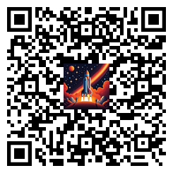
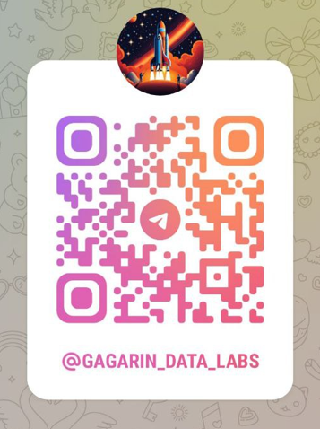

Цифровая инклюзия:
мои проекты для людей
с моторными, речевыми и зрительными нарушениями.
По личным обстоятельствам я прекрасно понимаю, с какими сложностями сталкиваются люди, когда они сами или их близкие ограничены в восприятии мира из-за физических или ментальных особенностей.
На этой странице собраны мои разработки для расширения возможностей человека. Я создаю доступные решения на стыке ИИ (искусственного интеллекта) и авторских инженерных подходов.
Возможно, эти работы и идеи помогут кому-то качественно изменить жизнь
или вдохновят на новые решения.
Мне приятно, что идеи и решения, разработанные в рамках этого проекта, уже совершенно бесплатно помогают людям, а созданные технологии (в частности, в сфере цифровых аватаров) получили признание и стали частью технологических решений известного международного бренда.
 AbleMouse - решения по управлению мышью и компьютером для людей
AbleMouse - решения по управлению мышью и компьютером для людей
с тяжёлыми физическими ограничениями, например, при параличе тела и головы.
Сейчас AbleMouse представляет собой несколько отдельных продуктов, разработанных для помощи пользователям в зависимости от их индивидуальных физических возможностей. Ниже приведена таблица, которая поможет сориентироваться в доступных вариантах. Все продукты серии имеют полностью открытый исходный код и инструкции по запуску и сборке.
Решения достаточно просты: их первичную установку, сборку и настройку могут выполнить местные волонтёры прямо в вашем городе. Для этого достаточно компетенций технически подкованного студента младших курсов из ближайшего вуза — нужен лишь базовый уровень программирования и желание разобраться
Название продукта |
Какие трудности испытывает человек |
Что доступно человеку (какую часть тела может использовать) |
Описание |
Совместимые ОС |
AbleMouse Beyond Switch Edition |
Полная неподвижность тела и головы |
Варианты: |
Позволяет управлять, мышью, клавиатурой и в целом компьютером. Обеспечивая голосовой контроль компьютера даже для людей без голоса и при полном параличе. Это более естественный и гибкий способ в отличие от традиционных switch control подходов реализованных например в Mac OS Подробности (описание, инструкции, исходный код и видео) |
Windows / потенциально возможна работа на macOS (нужно тестировать) |
AbleMouse AI Edition |
Полная неподвижность тела |
Может поворачивать и опускать/поднимать голову; функционируют глаза или рот |
В точку, куда указывает нос, позиционируется курсор, а клики делаются глазами и ртом. Тут важно, что позиционирование происходит именно по направлению, т.е. экран может быть очень большим, но человеку никуда не нужно двигаться — нужно просто направить нос в точку, куда переместить курсор. Подробности (описание, инструкции, исходный код и видео) |
Windows / macOS / поддержка Unix/Ubuntu возможна — требуется тестирование |
AbleMouse DIY Edition |
Варианты:
|
Варианты:
|
Варианты использования: Подробности (описание, инструкции, исходный код и видео) |
Windows, macOS, iOS, iPadOS, Unix (Ubuntu), Android |
AbleMouse MouseCommander |
- |
- |
Может быть использован совместно с DIY Edition и AI Edition. Представьте ситуацию: вы можете управлять курсором, но только нестандартными способами (например, с помощью глаза) — БЕЗ классической мыши, клавиатуры и других привычных устройств ввода. Встроенные средства Windows в таких условиях оказываются не слишком удобными. Например, чтобы переместить курсор из одного угла экрана в противоположный, вам всё равно придётся "вести" его по всему пути — быстрого способа "телепортации" курсора нет. При этом в системе есть множество полезных сочетаний клавиш и вспомогательных утилит, которые могли бы значительно упростить задачу. Но как их вызывать, если вы не можете использовать клавиатуру или другие стандартные методы ввода? MouseCommander решает эту задачу. Подробности (описание, инструкции, исходный код и видео) |
Windows |


 Телеграм бот «Костя», возвращающий голос тем, кто не может говорить, и цифровую внешность тем, кто её потерял.
Телеграм бот «Костя», возвращающий голос тем, кто не может говорить, и цифровую внешность тем, кто её потерял.
С февраля 2026 бот недоступен из-за блокировок Telegram. Перенос проекта в мессенджер MAX ограничен правилами платформы: требуется верификация юридического лица.
Озвучка возможна голосами волонтёров, предзаписанными голосами, а в некоторых случаях — клоном собственного голоса (при условии подтверждения личности, чтобы исключить злоупотребления). Доступ к клону голоса имеет только конкретный пользователь.
Для тех, кто утратил внешность из-за травмы, я создаю цифровой аватар. Через бот человек формирует видео, где он в привычном облике произносит любой текст.
Это не массовый автоматический сервис, а качественно собранные вручную модели, сохраняющие живую индивидуальность, в основе которых лежит авторская технология.
На данный момент (январь 2026) с помощью экземпляров бота для разных стран было озвучено более 1 миллиона сообщений и в среднем на постоянной основе им пользуются 130 человек.
Конечно, с точки зрения IT это не большой "трафик", но в человеческом плане это не имеет цены.
Всю базовую информацию (ссылка на бот, руководство пользователя, история и т.д.) можно почитать в специальном телеграм-канале, посвящённом поддержке бота.
Вот ссылочка и QR код на пост в канале https://t.me/f1KostyaBot/6, в котором собрана полезная информация:
(QR-код для указанной выше ссылки)
Ægo (Альтер Эго) - ИИ-аватары реального времени с синхронизацией губ для доступности и не только
Разработанный мной подход для создания аватаров всего за два года прошел путь от статических картинок до видео с синхронизацией губ в реальном времени
Аватары помогают людям с травмами лица (бот Костя) и уже стали частью технологических решений известного международного бренда.
Аватары могут работать в офлайн-режиме (так реализовано в боте) и в реальном времени (при этом вам не нужно ждать окончания обработки: аватар «оживает» мгновенно, даже если ему предстоит озвучить часовую лекцию). В качестве шаблона может быть использовано практически любое видео с человеком или анимированным персонажем.
При использовании мобильного процессора (AMD Ryzen 9 7845HX БЕЗ gpu) система выдает около 1,3 секунды видео с аватаром за секунду работы
Переход на скромную мобильную (для ноутбуков) видеокарту (NVIDIA GeForce RTX 5070 8GB) ускоряет процесс в разы: теперь за одну секунду работы компьютера формируется 5,3 секунды видео.
- Робототехника: Создание «лица» или разных образов (скинов) для роботов, т.к. один из самых дорогих компонетов (ранее требовавших мощных и дорогих серверов) можно разместить прямо в роботе.
- Корпоративные помощники: Компании смогут создавать своих ассистентов, не завися от дорогих облачных сервисов. Это удешевляет оборудование, снижает расход энергии и повышает безопасность корпоративных данных, так как всё работает локально.
- Медицина: Помощь в реабилитации пациентов, создание виртуальных консультантов.
- Медиа и развлечения: Быстрое создание цифровых ведущих, персонажей для игр или образовательного контента.
Вот примеры простых демонстраций, которые я делал на базе этого решения:
- 🎬 Rutube Диалог с аватарами (обсуждение сказки «Золушка»), ↢ все что вы видите происходит БЕЗ участия GPU (графический процессор).
При этом дольше всего длится транскрибация — преобразование аудиозаписи в текст, а видео формируется моментально - 🎬 Rutube Мгновенная генерация аватаров с точной синхронизацией губ, не зависящая от длины аудио.
- 🎬 Rutube "Живой" аватар со спецэффектами в стриме — мгновенное создание рекламы.
TellMeCam — Смотри голосом. Персональный ИИ-ассистент для незрячих (R&D проект)
Это носимое устройство, которое служит «умными глазами» для пользователя.
TellMeCam работает в режиме 100% hands-free (управление голосом):
Устройство крепится на одежду или аксессуары, позволяя человеку не доставать смартфон и не занимать им руки.
Контекстный диалог: пользователь может не просто слушать описание, а задавать уточняющие вопросы об окружении.
Вот примеры простых демонстраций, которые я делал на базе этого решения:
У меня есть небольшой телеграм-канал https://t.me/gagarin_data_labs, где я по мере реализации идей публикую информацию.
Там можно найти интересные исследования (R&D), например, по чтению речи по губам, а также много других экспериментов.

(qr код канала)мой email: aradzhabov@gmail.com